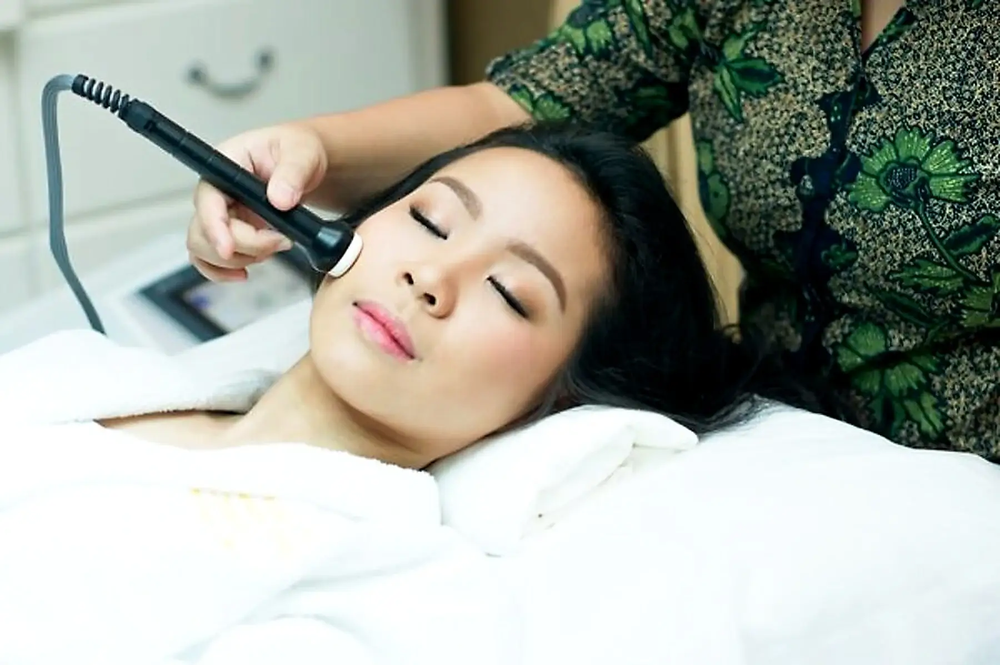
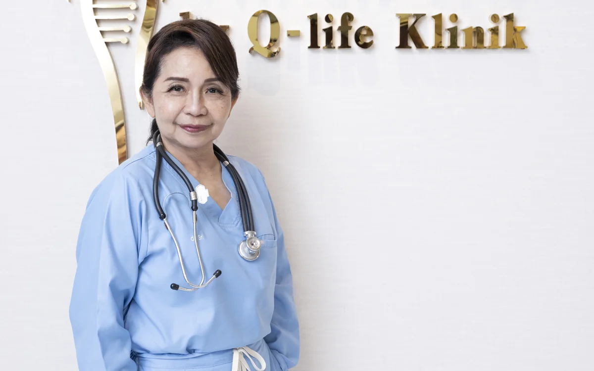
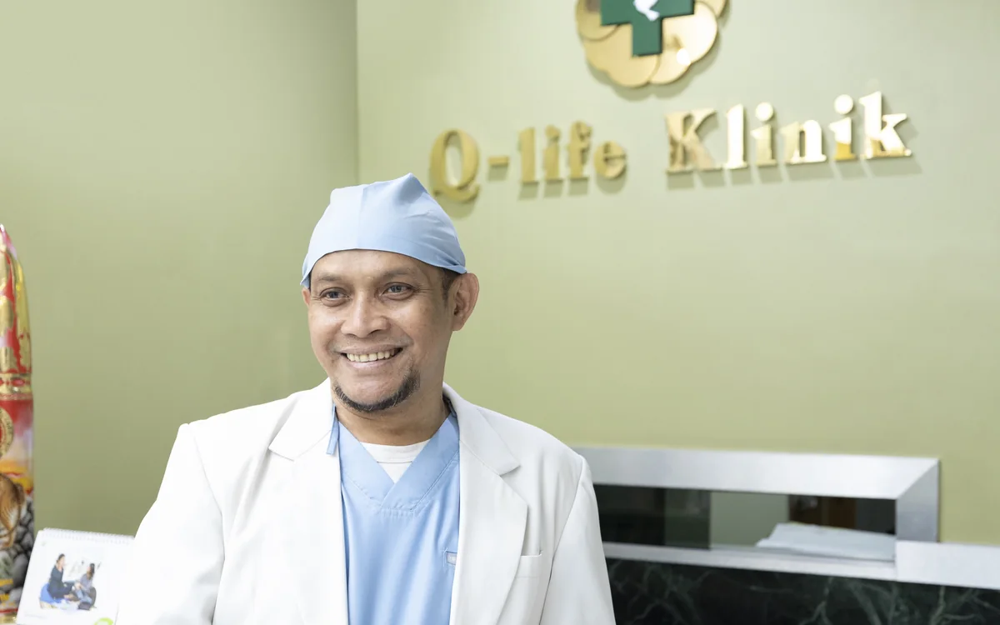
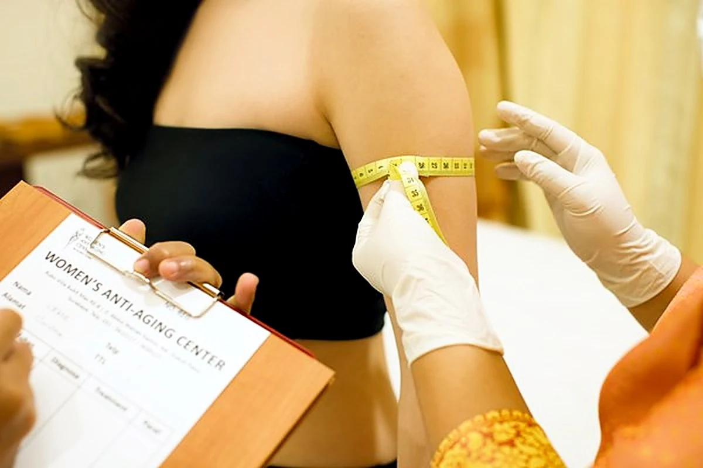

01
Route · IV Infusion
O₃ · Measurable
Ozone Bubble Therapy (IV Infusion)
Therapy delivered via intravenous infusion following medical evaluation and under professional supervision.
A center for complementary therapy, palliative care, and Medical Ozone Therapy—integrating holistic medical care to help people with chronic and degenerative conditions maintain their quality of life and pursue healthy aging.
Since 2004 in Surabaya
Direct rating of the profile Google Maps Q-Life Klinik: real patient assessment of the quality of our services, therapy and medical assistance.
Standardized complementary therapy protocols, integrated with conventional medical care for chronic and oncological diseases.

Medical ozone (O₃) is delivered to the body along with oxygen, through the skin, muscles or blood, to: treat inflammation, pain, viruses, bacteria, candida and parasites.
Learn more →
Holistic palliative care for patients with advanced disease: symptom management, psycho-social-spiritual support.
Learn more →
BeautyOzone therapy anti-inflammatory and aesthetic treatment based on cell regeneration, with medical supervision.
Learn more →Download the official brochure to familiarize yourself with the service summary before consulting.
Our complementary therapies are designed as adjuvants: supporting the effectiveness of the patient's primary therapy, suppressing side effects, and maintaining quality of life.

Reduces the toxic effects of chemotherapy, radiation, and long-term pharmacological therapy.
Supports gradual recovery of immune function and quality of life in chronic disease patients.
Addresses the biological, psychological, social, and spiritual aspects: not just the manifestations of disease.
Medical ozone (O₃) at concentrations of 0.05–0.5% is delivered with oxygen through different routes, selected according to each patient's condition. Explore all nine methods and how they work.

Q-Life · MedicalPalliative Care, Integrative Medicine & Anti-Aging Practitioner
RRI health resource Surabaya & JTV talk show. Practice Monday–Saturday, 10.00–16.00.
View profile →
Q-Life · MedicalAcupuncture, Sujok & Anti-Aging Practitioner
Acupuncture (LP3A, 2000) & NFNLP licensed hypnotherapy (2010). Practice Monday–Saturday, 10.00–16.00.
View profile →Q-Life Klinik is a center for complementary therapies, palliative care for cancer and chronic diseases, equipped with Medical Ozone Therapy. For more than two decades, we have served patients holistically, wholeheartedly and with dignity.

"We exist because of you: providing quality, dignified health care."
To become the leading complementary medicine-based health service in Indonesia, especially for palliative services (Palliative Care).
Real atmosphere of our Women's Anti-Aging Center services and complementary therapies.





Consult your condition with our medical team. Appointment scheduling is available Monday–Saturday.


Experiences shared by our patients.
Public review snapshot of Google Maps Q-Life Klinik profile. Read all reviews on Google Maps